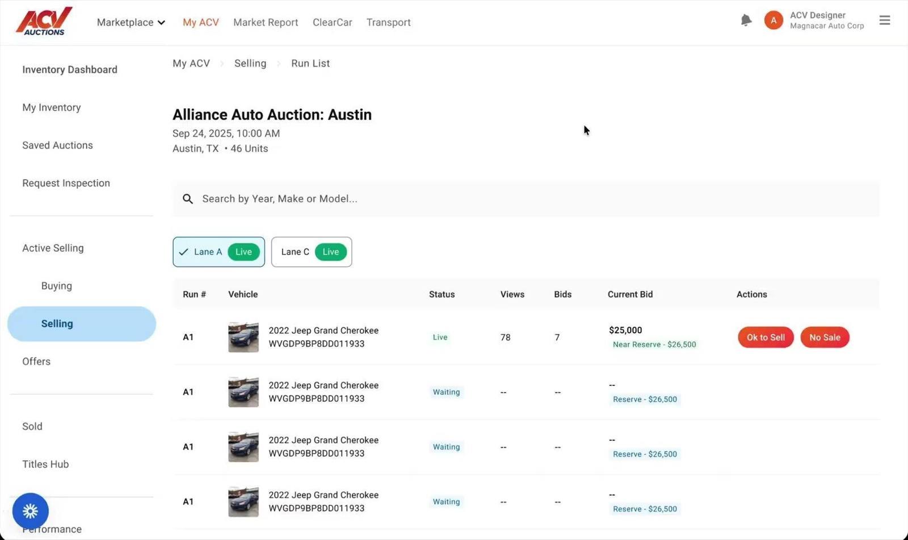
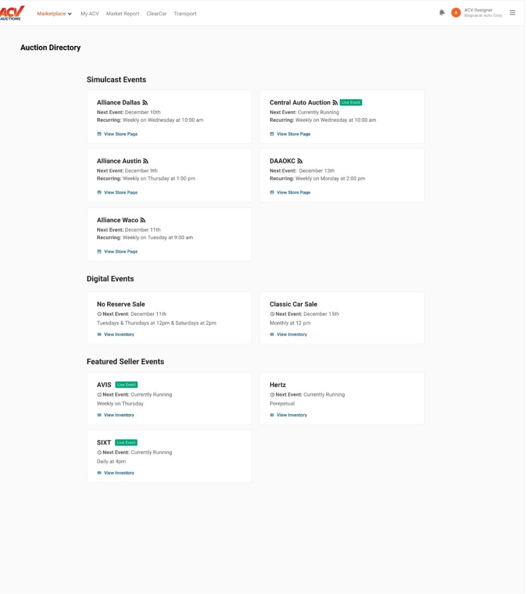
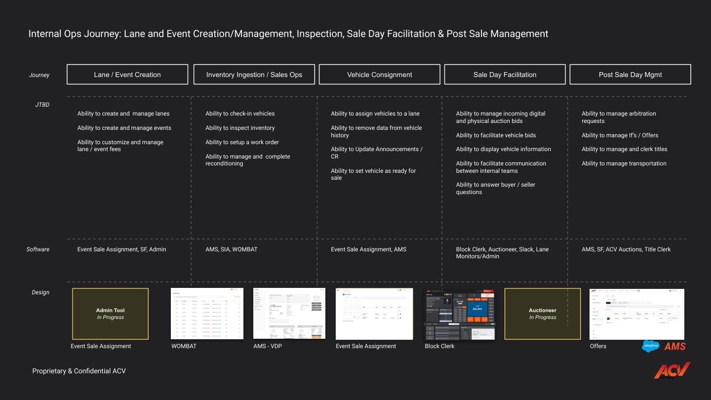
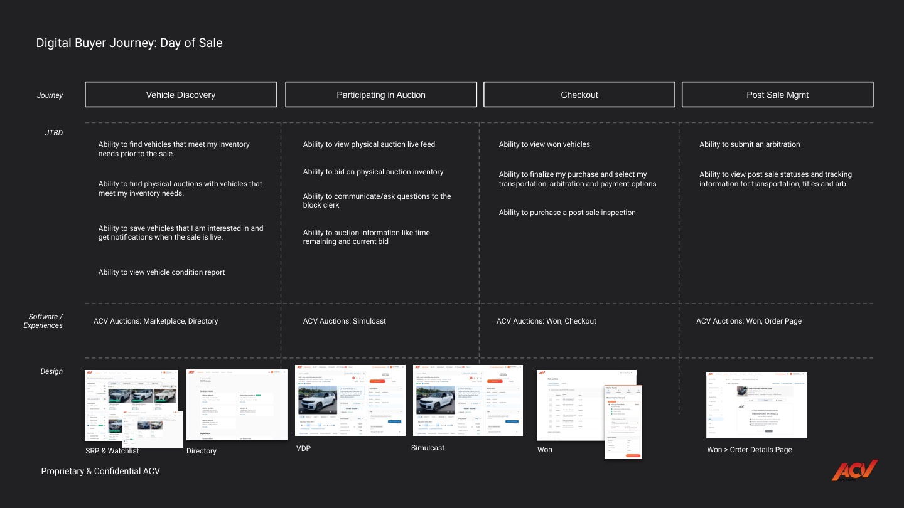
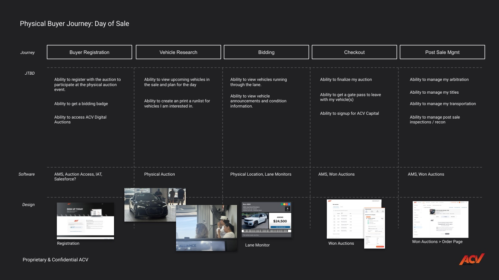
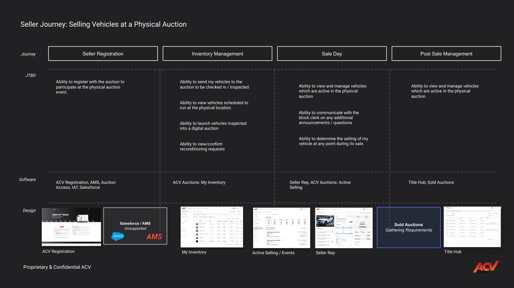

ACV grew up as a digital wholesale marketplace. Physical auctions, where cars run live through a lane, ran on their own disconnected tools, staff, and rituals. To grow supply we had to make the physical auction a first-class citizen of the digital platform, without breaking the human rhythm that makes a live sale work.
The job wasn’t to digitize the auction. It was to connect the physical floor and the digital marketplace into one experience for buyers, sellers, and the staff running the sale.
physical auctions to bring online, then scale
target lift in commercial supply, 20 to 40K vehicles
connected experiences: buyer, seller, and operations, on one platform
We shadowed and interviewed every role in the live-auction ecosystem, on site in Austin and Dallas. I wanted to see how each role really works, where the system lags the human, and where signals get lost in the clutter.
Two discovery tracks anchored the program: a buyer purchase-path study and a seller selling-path study. We paired dealer and expert interviews with a teardown of how the rest of the industry runs its online lanes: Manheim, Adesa, OpenLane, eBlock, Edge Pipeline, and Stockwave.
how often a remote proxy bid beats the floor. The room almost always wins
auctions a single dealer runs online via Simulcast, because they refuse to be stuck at one
across dealers, GMs, ops, and seller reps
Chris, independent dealer
Meet dealers where they already are, make the floor legible and fair to a remote bidder, and replace manual coordination with live, connected tools.
For buyers: buy from a physical auction, digitally.
Live physical-auction events in search and a new event directory. A universal VDP with condition reports, announcements, proxy and watchlist. Simulcast to watch the lane and bid on floor inventory in real time. Won, checkout, and post-sale in one flow.

For sellers: run your sale from the lane, in real time.
My Inventory and Active Selling show what’s ready and what’s running. A new seller rep tool manages vehicles live: SELL or PASS, reserves, counters. Floor and online activity, pricing guidance, and announcements in one view.
For ops: run the whole event from one portal.
An operations portal as the single home for every internal tool and role. Net-new tools for event and lane management, a block tool for the clerk and auctioneer, reconditioning, check-in and check-out, inspections, and bidder badges.

An auction directory, finally.
Simulcast events, digital events, and featured seller events in one place, with the next date, the cadence, and a way in.
To run a physical auction in-house on ACV’s tools, I mapped each role’s day-of-sale journey, every job tied to the tool that does it, then connected the maps so a hand-off in one journey triggers the next. A vehicle checked in by ops shows up live for the buyer, on the block for the auctioneer, and in the seller’s lane view.




new features mapped and designed across buyer, seller, and staff roles
net-new tools: block tool, event sale assignment, reconditioning, lane monitor, bidder badges, ops portal
researched on site, feeding a living service-design map of the live auction
One connected experience for everyone who touches the sale.
Simple tools, used well.
 FigmaService maps, flows and the program
FigmaService maps, flows and the program ExcelTracking, planning and the numbers
ExcelTracking, planning and the numbers HTMLStructure, built by hand
HTMLStructure, built by hand CSSLayout, styling and motion
CSSLayout, styling and motion JavaScriptInteractions and the working prototype
JavaScriptInteractions and the working prototype